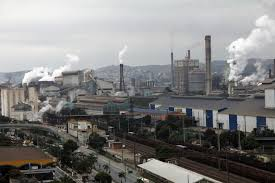

Produção no Campo

A produção no campo está ligada principalmente às atividades agropecuárias. Envolve o cultivo de alimentos, criação de animais e extração de matérias-primas naturais.
- Agropecuária (plantio e criação)
- Produção em grande escala e sazonal
- Uso de máquinas e técnicas agrícolas
- Importância na exportação de alimentos
Produção na Cidade
A produção nas cidades está relacionada à indústria e aos serviços. A urbanização intensificou a fabricação de bens e o oferecimento de serviços especializados.
- Indústrias e comércios
- Maior concentração de tecnologia
- Alta densidade populacional
- Serviços e consumo diversificado
Comparação
.jpg)
Enquanto o campo foca na produção de recursos naturais, a cidade transforma esses recursos em produtos e serviços. Ambos são essenciais e interdependentes na economia.
| Campo | Cidade |
|---|---|
| Produção agrícola | Produção industrial |
| Menor densidade populacional | Alta densidade populacional |
| Dependência do clima | Tecnologia intensiva |